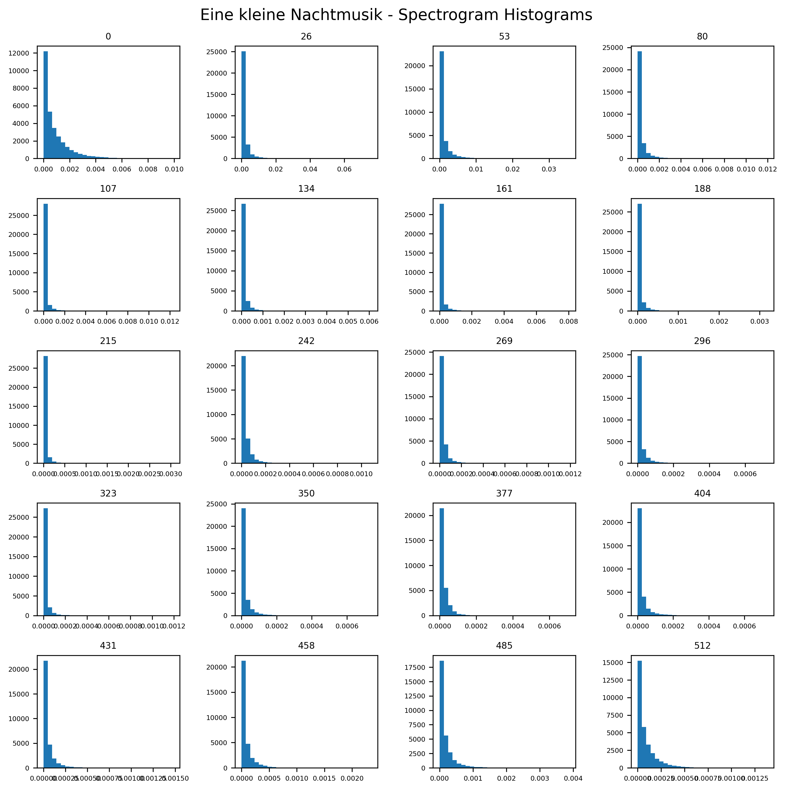
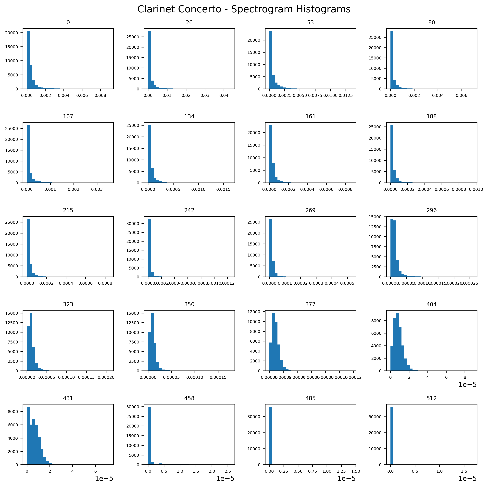
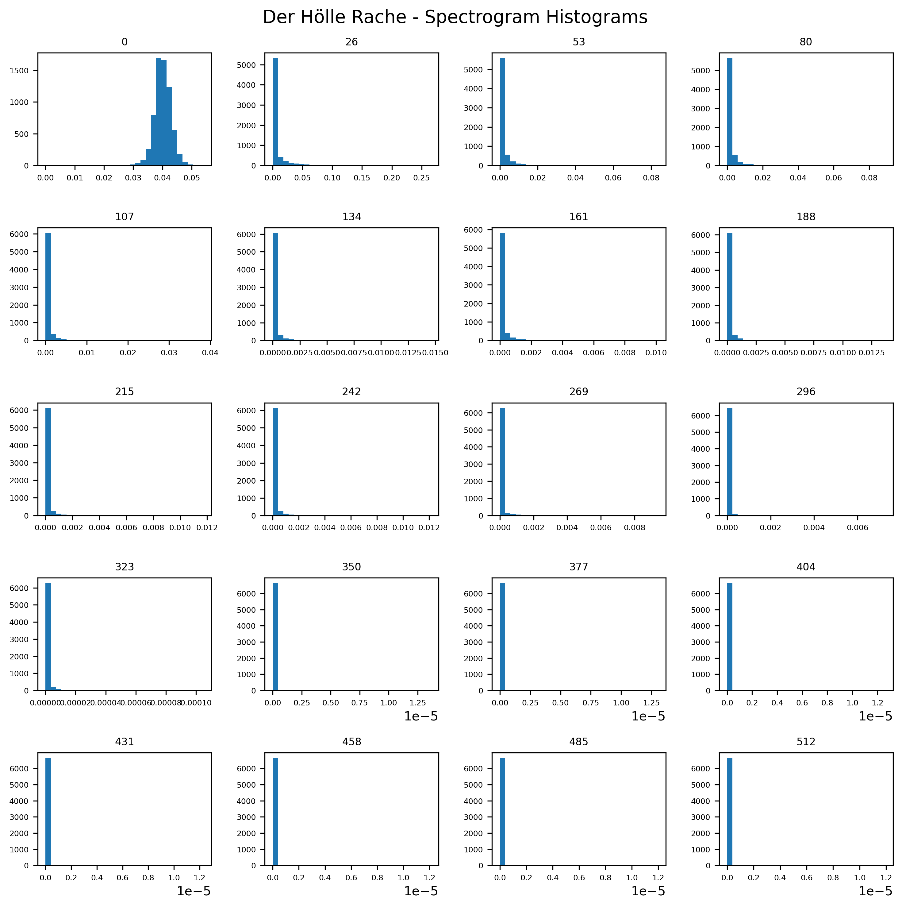
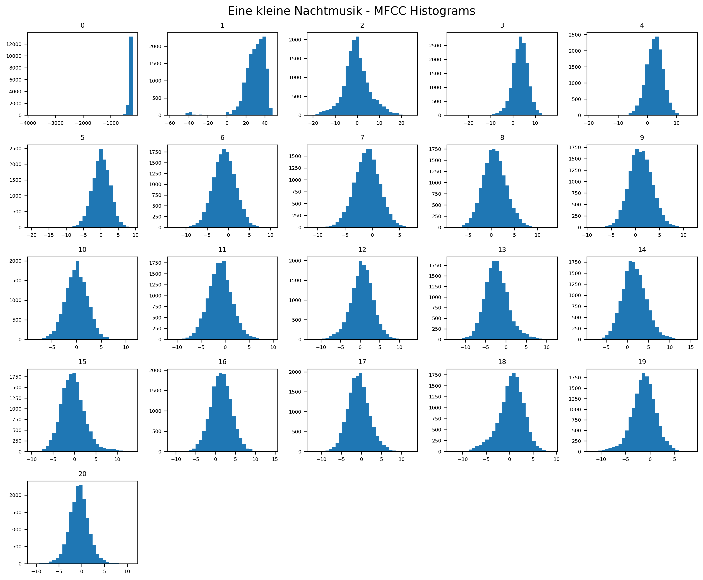
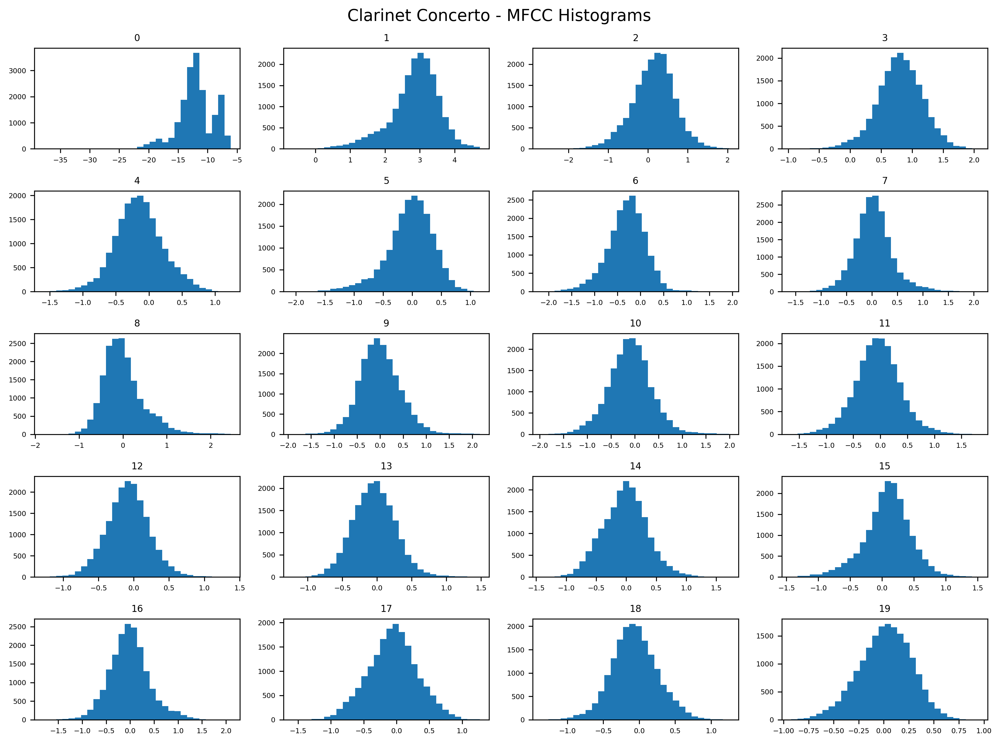
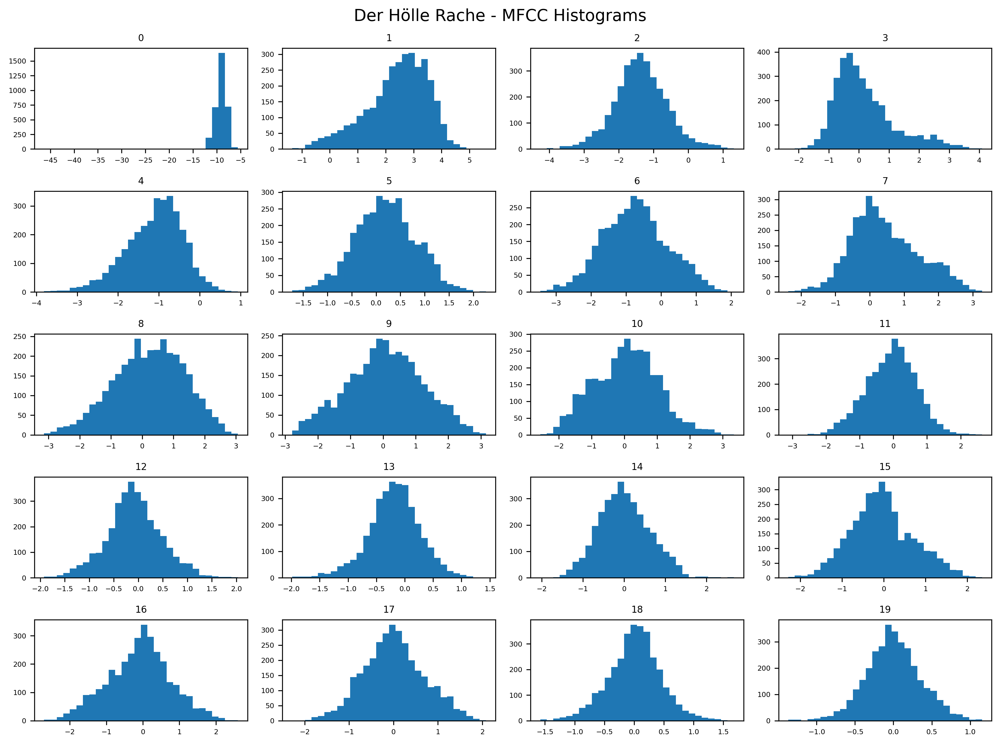
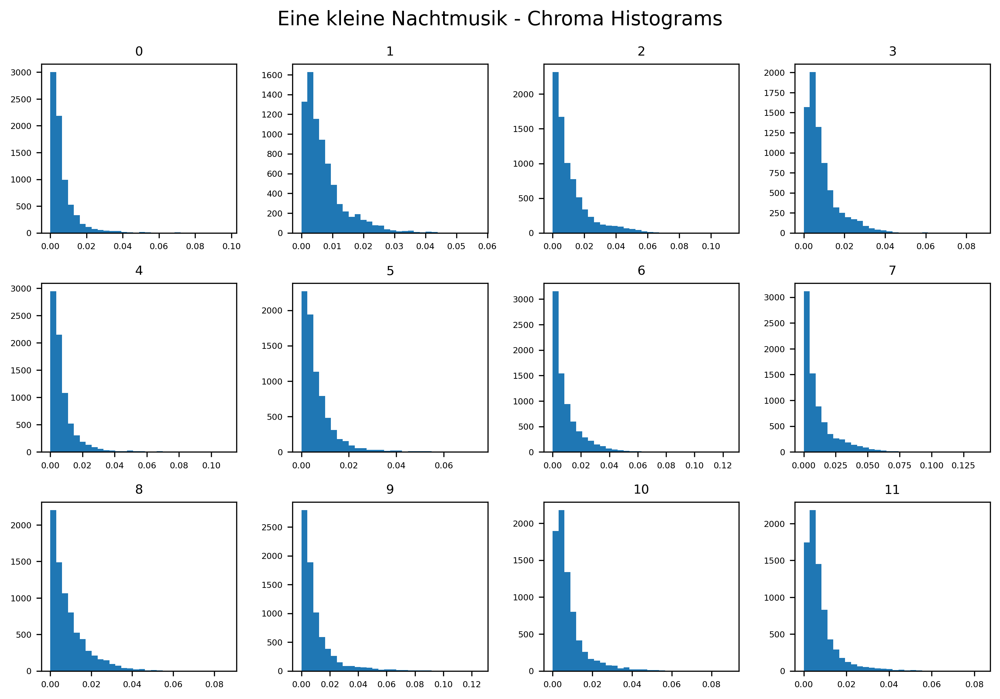
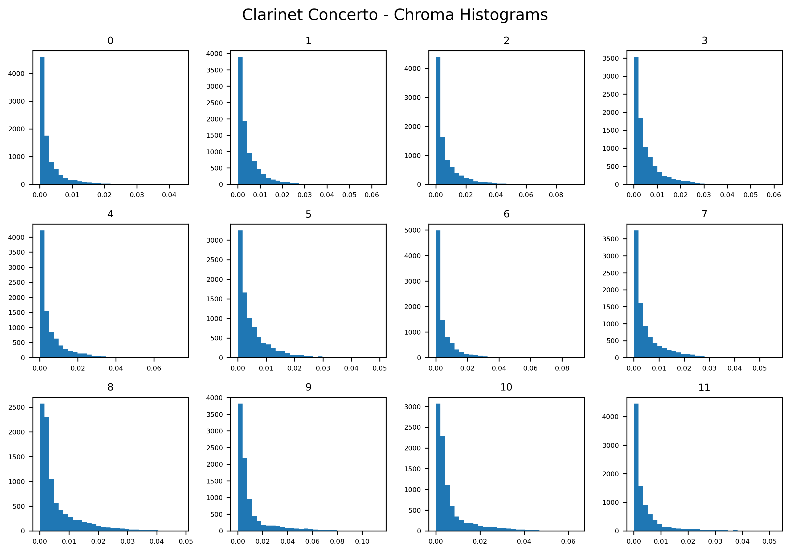
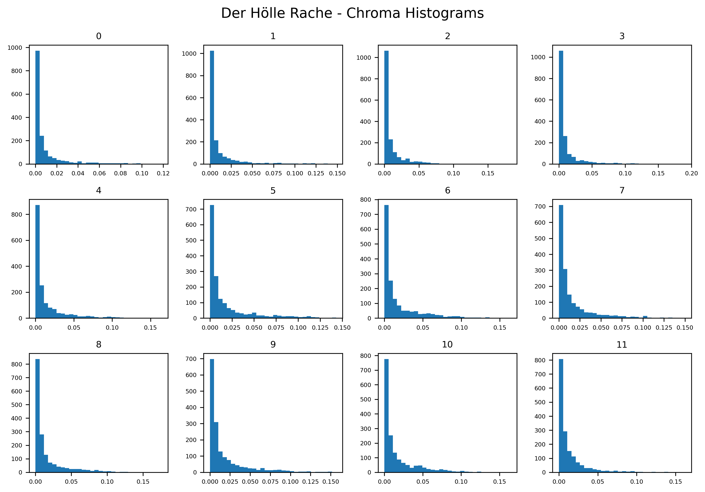

Task 1: Extracting Features
For this week's task, I used the same three Mozart recordings from Week 8. I analysed each track in Sonic Visualiser using a spectrogram, Mel Frequency Cepstral Coefficients (MFCCs), and a chromagram.
Eine kleine Nachtmusik – 1. Allegro
Klarinettenkonzert A-Dur – 2. Adagio
Der Hölle Rache
Task 2: Computing and Visualising Histograms
I used Python in Jupyter Notebook to load the extracted feature data and create histograms for each of the three recordings.
Histograms Computed from Spectrograms

Eine kleine Nachtmusik

Clarinet Concerto

Der Hölle Rache
Histograms Computed from MFCCs
MFCCs describe characteristics of the sound and can be used to compare differences in timbre between recordings.

Eine kleine Nachtmusik

Clarinet Concerto

Der Hölle Rache
Histograms Computed from Chromagrams
Chromagrams represent the distribution of pitch classes in the recordings.

Eine kleine Nachtmusik

Clarinet Concerto

Der Hölle Rache
MFCC Feature Comparison
I compared MFCC Feature 1 across the three recordings to see whether the distributions showed clear differences between the tracks.

Discussion
The comparison of the MFCC histograms is discussed here.